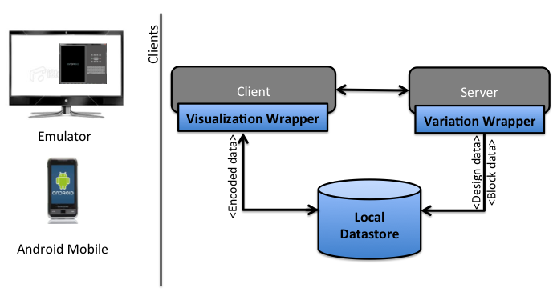
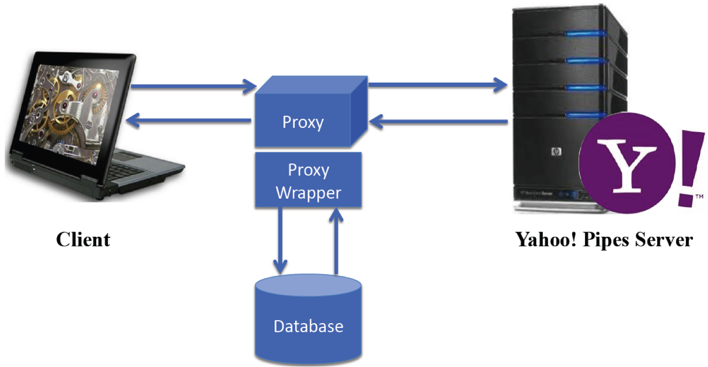
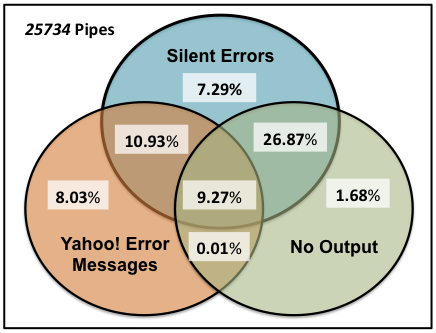
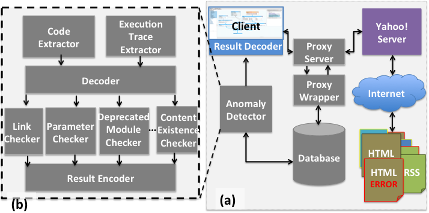

Helping Users Utilize Software Engineering Techniques (Ph.D. Thesis)
It is known that end users do not design upfront. When end-user programmers
create programs their design decisions and coding activities are interlaced. Later, as
requirements emerge and change, end users opportunistically employ reuse to support
their applications. While reusing, they need to explore and search for examples with
desired qualities, select the most appropriate example and understand it, and possibly
debug it.
Previous studies have found large instances of clones in the repositories,
underlining the fact that cloning is a common mechanism for reuse among
end users. Moreover, end users debug their programs into existence. They employ
their past successful or unsuccessful strategies to debug their programs. All these
end-user activities tend to create variations and need to be supported to facilitate
programming tasks. Hence to facilitate end user's programming ventures I have lead research in
following projects:
Support for Variation over Space: AppInventorHelper
Project Description: End users with little formal programming background are creating software in
 many different forms, including spreadsheets, web macros, and web mashups. End-user
programming environments allows end users to create programs, but end users still
face various programming barriers due to lack of software engineering support in
these environments. One source of support known to be beneficial for professional
developers with their programming ventures is variation management. Variation
management deals with managing variations over time and space. We believe that
leveraging variation management we can help end users with programming tasks,
including program exploration, program understanding, verification and debugging.
This research intends to provide novel ways of integrating variation management into
the existing work flow of end users and help them create programs more effectively
and efficiently.
many different forms, including spreadsheets, web macros, and web mashups. End-user
programming environments allows end users to create programs, but end users still
face various programming barriers due to lack of software engineering support in
these environments. One source of support known to be beneficial for professional
developers with their programming ventures is variation management. Variation
management deals with managing variations over time and space. We believe that
leveraging variation management we can help end users with programming tasks,
including program exploration, program understanding, verification and debugging.
This research intends to provide novel ways of integrating variation management into
the existing work flow of end users and help them create programs more effectively
and efficiently.
 To better understand the usage of variants by end-user programmers, we conducted an online survey. Based on the requirements gathered from the survey, we designed, prototyped, and implemented variation managment support to a visual programming environment for mobiles (App Inventor), called "AppInventorHelper", variants of applications automatically, in a manner that allows users to utilize the advantages of variation management without needing to be aware of the underlying functions known to professional programmers. We modified the code of open source project, App Inventor, to support variation management in the environment. To achieve that I have used GWT, Java and MySQL for implementing the variation wraper. The visualization wrapper will be designed using PHP, d3.js libraries, Ajax and JSON. Controlled user study of 10 participants was conducted to assess the effectiveness of our variation management support into end user environment. The study helped us to understand the behaviors that end users engage in with and without the support of AppInventorHelper. It also helped us to understand end users' usability experiences with AppInventorHelper, and discover ways in which AppInventorHelper could be improved.
Contributions:- Bringing the notion of variation management to visual programming environments.
- We identify various components of variation management systems that can be mapped to visual programming languages.
- Enabling end users to explore, understand, verify and debug their variations, by providing them with sophisticated mechanisms that will foster these activities.
- Understanding end users' behavior while debugging and reusing variations and creating new model and theories.
Surveys, think-aloud, protocal analysis, User-Centred Design, low/hi-fidelity prototyping, implementation, observation, questionnaires, parametric and non-parametric statistical methods qualitative/quantitative summative evaluation (lab usability study), Microsoft Desirability Kit.
Publications:
Sandeep K Kuttal, "Variation Support for End Users", in Proceedings of the IEEE Symposium on Visual Languages and Human-Centric Computing - VL/HCC, San Jose, CA, USA, pages 183 - 184, September 2013.
Sandeep K Kuttal, A. Sarma, and G. Rothermel, Design and Evaluation of an End-user Variation Management System, submitted to CHI 2015.
Support for Variation Over Time: Pipe Plumber
Project description: Mashup programming environments provide central repositories to end users where
they can store their mashups. However, current environments do not provide facilities
by which users can keep track of the versions or provenance of the mashups they
create. In the professional software engineering community, versioning is widely acknowledged
as beneficial for activities such as code understanding, change traceability,
debugging and maintenance. Providing Versioning will help in giving the end user
flexibility in backtracking, trying alternative ideas and going back to successful
state. Versioning also helps in reuse and debugging.
Mashup programming environments provide central repositories to end users where
they can store their mashups. However, current environments do not provide facilities
by which users can keep track of the versions or provenance of the mashups they
create. In the professional software engineering community, versioning is widely acknowledged
as beneficial for activities such as code understanding, change traceability,
debugging and maintenance. Providing Versioning will help in giving the end user
flexibility in backtracking, trying alternative ideas and going back to successful
state. Versioning also helps in reuse and debugging. To implement versioning support, we create a proxy wrapper. This proxy wrapper intercepts the JSON code (pipe) that is transmitted between the user's client running in their browser and the Yahoo! Pipes server. This allows "Pipes Plumber" to be operational for most web browsers (including Internet Explorer, Chrome, Firefox and Safari).  We use a proxy server (Squid 3.1.4) to manage communications between the client (web browser) and the Yahoo! Pipes server Using the Internet Content Adaptation Protocol (ICAP), a proxy wrapper intercepts the request and response messages exchanged between a client and the Yahoo! Pipes server. When the user requests the user interface (UI) of Yahoo! Pipes, the response related to the UI is redirected to the proxy wrapper. The proxy wrapper modifies the response messages of the UI by inserting "widgets" related to versioning and debugging into the UI of Yahoo! Pipes before delivering the message to the client.
With two formative studies we found that versioning benefit computer science and end user participants in: 1) reducing learning barriers, 2) helping them reuse parts of pipes, and 3) improving their debugging performance.
Contributions:
- Our overall research approach for supporting versioning can be applied in other programming environments to help end-user programmers. Our approach involves identifying and defining intuitive features useful for exploring and using versions.
- Two formative empirical studies investigating the proof-of-concept for versioning support in Yahoo! pipes. These studies were conducted with participants who did and did not have formal training in computer science. These studies helped us identify the differences between the two groups with and without our versioning support. These studies also provided insights into users' behavior and the hurdles faced during program creation and debugging tasks.
- We also discuss various implications for the design of end-user programming environments to facilitate end-user debugging and programming activities such as program exploration, program understanding, verification and debugging in the context of variation management.
think-aloud, protocal analysis, User-Centered Design, low/hi-fidelity prototyping, implementation, surveys, observation, questionnaires, parametric and non-parametric statistical methods, qualitative/quantitative summative evaluation (lab usability study).
Publications:
-
Sandeep K Kuttal, A. Sarma, and G. Rothermel, "On the Benefits of Providing Versioning Support for End-Users: an Empirical Study", in Proceedings of Transactions of Computer and Human Interactions - TOCHI(accepted).
Sandeep K Kuttal, A. Sarma, and G. Rothermel, "History Repeats Itself More Easily When You Log It: Versioning for Mashups", in Proceedings of the IEEE Symposium on Visual Languages and Human-Centric Computing - VL/HCC, Pittsburgh, PA, USA, pages 69 - 72, September 2011.
Sandeep K Kuttal, A. Sarma, A. Swearngin, and G. Rothermel. "Versioning for mashups - an exploratory study",in Proceedings of the International Symposium on End-User Development - IS-EUD, Torre Canne (Brindisi), Italy, pages 25 - 41, June 2011.
Sandeep K. Kuttal, A. Sarma, and G. Rothermel, "On the benefits of providing versioning support for end-users: An empirical study", In Technical Report TR-UNL-CSE-2012-0008. Dept. of Computer Science, U. Nebraska,2012, available at http://cse-apps.unl.edu/facdb/publications/TRUNL-CSE-2012-0008.pdf
Our observations underscore a need for better testing techniques and debugging tools for helping end-user programmers create dependable mashups. In our studies, end users faced difficulty locating the sources of errors. We found that the users performed testing activities in an ad-hoc manner. (This encouraged us to pursue next projects)
Video:
To see the demo of the "Pipe Plumber" click here
Debugging Support for End-User Mashup Environments
Project Description: Mashups are situational applications which interact with web which is a complex ecosystem of heterogeneous formats, services, protocols, standards and languages all of which tend
to evolve. A further complication involves the interfaces by which mashups are created:
mashup environments facilitate mashup creation by providing visual interfaces, which
abstract the underlying code as black box features. The problems related to bugs in mashups
are exacerbated by the typical programming practices used to create mashups.
One implication of the foregoing data is that debugging of
mashups is important. Such debugging, however, intrinsically
involves distance and visibility issues due to distributed and
black box dependencies, and this renders it time and effort
intensive.
of heterogeneous formats, services, protocols, standards and languages all of which tend
to evolve. A further complication involves the interfaces by which mashups are created:
mashup environments facilitate mashup creation by providing visual interfaces, which
abstract the underlying code as black box features. The problems related to bugs in mashups
are exacerbated by the typical programming practices used to create mashups.
One implication of the foregoing data is that debugging of
mashups is important. Such debugging, however, intrinsically
involves distance and visibility issues due to distributed and
black box dependencies, and this renders it time and effort
intensive.To assess the occurrences of bugs in Yahoo! Pipes programs,  we examined a large corpus of pipes. To do this we wrote a web crawler in java that collected unique pipe identifiers using a snowball sampling approach. This process retrieved 25,734 unique pipe identifiers. For each identifier we obtained the code for the pipe. We classified  the type of anomalies which can occur in the wire-oriented mashups. To investigate the issues involved in debugging mashups, and approaches that may make the task easier for mashup programmers, we have implemented enhanced support for debugging in the Yahoo! Pipes environment. Our approach involves providing techniques for detecting the presence of bugs in pipes, and providing feedback to mashup programmers that can help them locate and correct bugs more efficiently and effectively.
Our user study showed that it was difficult for end users to identify and localize faults without debugging support. We also observed that bugs related to program nesting, silent failures of programs, and program reuse were the hardest for end users to localize. Debugging enhancements greatly helped mashup programmers localize and efficiently fix bugs.
Contributions:
- We identify specific classes of faults found in Yahoo! Pipes programs that can be used directly, or as a starting point, for identifying fault classes in other end-user programming domains, including web-development and visual programming paradigms.
- We provide empirical results about the classes of faults that arise because of program nesting, silent failures of programs, and program reuse and their effects on debugging by end users; these too have implications for attempts to apply our approach to other domains.
- We provide guidelines about the implications of the above effects on design and debugging support in end-user programming domains that generalize beyond Yahoo! Pipes to other programming environments.
- Finally, we illustrate an overall research approach that can be applied in other programming environments to help enduser programmers. This approach involves a methodology for identifying fault classes, defining and implementing detectors for faults in those classes, creating appropriate messages about detected faults and providing instructions for fixing those faults.
think-aloud, protocal analysis, interviews, User-Centered Design, low/hi-fidelity prototyping, implementation, surveys, observation, questionnaires, parametric and non-parametric statistical methods, qualitative/quantitative summative evaluation (lab usability study).
Publications:
-
Sandeep K Kuttal, A. Sarma, and G. Rothermel, "Debugging Support for End-User Mashup Programming", in Proceedings of
Computer and Human Interactions - CHI, Paris, France,pages 1609 - 1618, April 2013.
End User Debugging Behavior from an Information Foraging Theory Perspective
Project description: We studied the behavior of 16 web active endusers. Multiple insights were derived from the data including the findings that there were two loops (finding and fixing) that
were entwined and that users had some common strategies/behaviors while debugging.
We derived a new IFT model through iterative analysis of the data and the codes by
following the tenets of grounded theory. We ultimately extended the IFT model for
debugging. Our extended model allows us to obtain a refined understanding of the
debugging behavior by separately focusing on the localization and correction of faults.
For each phase, a user’s foraging behavior during debugging involves the following
steps: (1) find cues, which are then processed into scents,
(2) navigate through patches,
(3) catch prey, and (4) “verify†the viability of the prey.
from the data including the findings that there were two loops (finding and fixing) that
were entwined and that users had some common strategies/behaviors while debugging.
We derived a new IFT model through iterative analysis of the data and the codes by
following the tenets of grounded theory. We ultimately extended the IFT model for
debugging. Our extended model allows us to obtain a refined understanding of the
debugging behavior by separately focusing on the localization and correction of faults.
For each phase, a user’s foraging behavior during debugging involves the following
steps: (1) find cues, which are then processed into scents,
(2) navigate through patches,
(3) catch prey, and (4) “verify†the viability of the prey. We found that the cues differ in how well they: 1) add conceptual clarity to error messages, 2) promote detectability, 3) connect users with relevant debugging information, and 4) narrow the search space for users. We also discovered several ways in which mashup programming environments, and end-user programming environments in general, can be enhanced to provide better cues in order to support end users’ debugging strategies. Contributions:
- Ours is the first user study to study the debugging behavior of end user's from IFT perspective.
- Extending IFT to model end-user debugging behavior.
- Classifying types of cues.
- Identifying debugging strategies.
- Discovering several implications for the design of end-user programming environments to facilitate end-user debugging.
think-aloud, protocal analysis, interviews, grounded theory constructs, surveys, observation, questionnaires, qualitative summative evaluation (lab usability study).
Publications:
-
Sandeep K Kuttal, A. Sarma, and G Rothermel, "Predator Behavior in the Wild Web World of Bugs: An
Information Foraging Theory Perspective", in Proceedings of the IEEE Symposium on Visual Languages and
Human-Centric Computing - VL/HCC, San Jose, CA, USA, pages 59-66, September 2013.